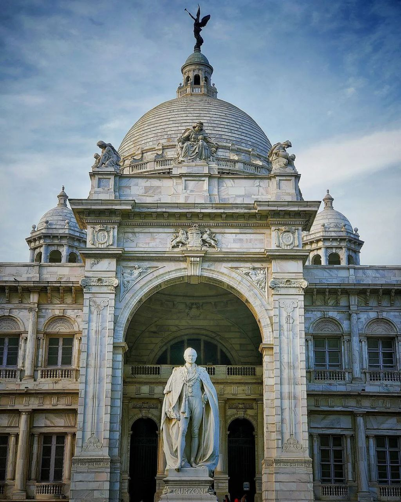
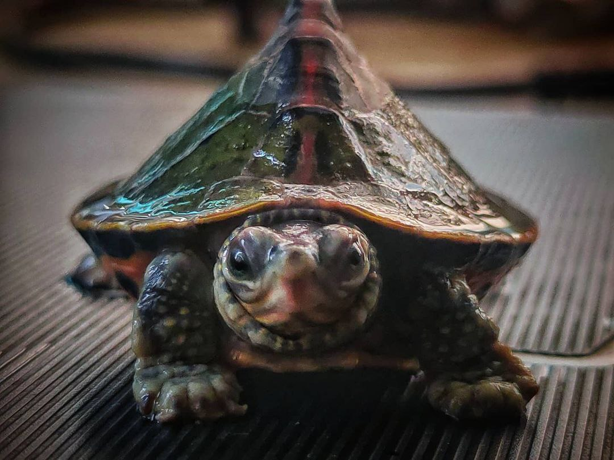
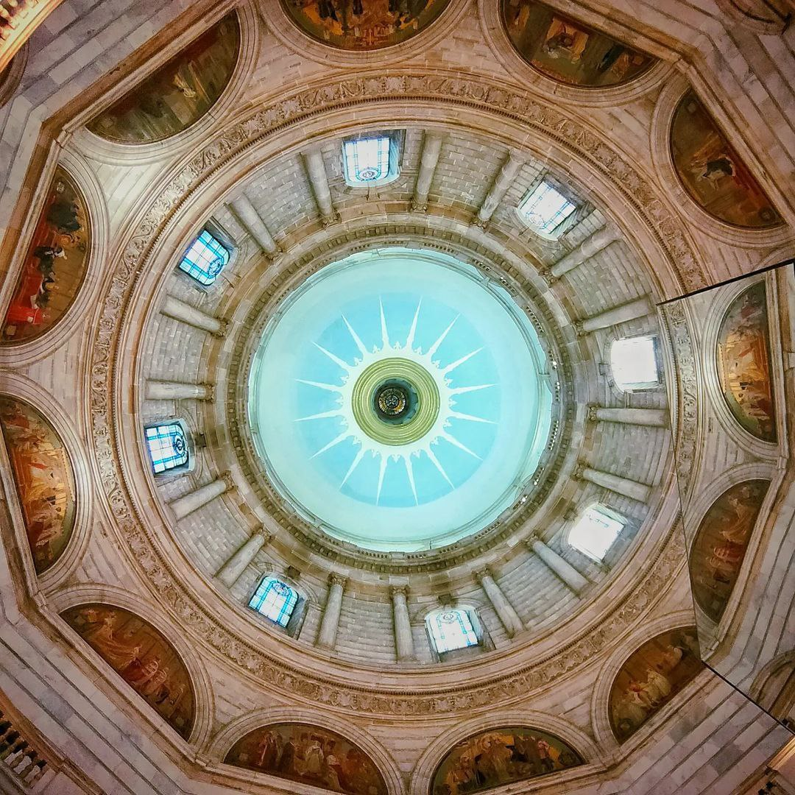
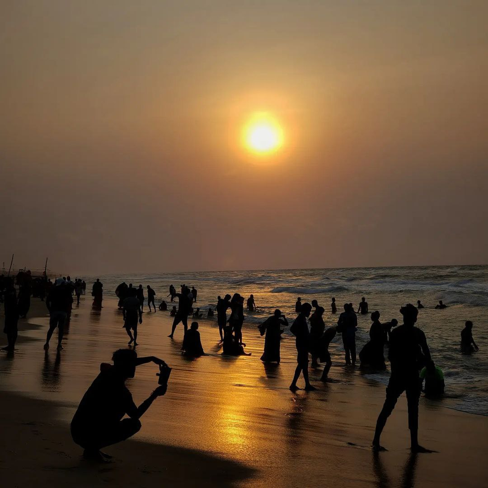

This photo beautifully portrays the Victoria Memorial in Kolkata, a symbol of British architecture in India. The towering statue of Lord Curzon, framed by the ornate arch and topped by the angelic figure at the peak, reflects the grandeur and historical significance of this monument. The image captures the essence of this iconic structure, blending history with artistic elegance.
This close-up shot captures the inquisitive gaze of a turtle, showcasing the delicate details of its textured skin and glossy shell. The image brings out the turtle's personality, making it feel almost as if it's trying to communicate through the lens. The vibrant colors and sharp focus highlight the beauty of this often-overlooked creature in its serene environment.
This mesmerizing image captures the intricate dome of a grand building from an upward perspective. The symmetry and the play of light through the stained glass windows create a sense of balance and awe. The circular design, along with the detailed stonework, draws the viewer's eye towards the center, where the grandeur of the architecture is fully realized.
As the sun sets over Puri Beach, the sky is painted in shades of gold and orange, casting a magical glow on the waves and the gathering crowd. The beach is alive with energy, as people bask in the serene beauty of the evening. The silhouettes of families, friends, and travelers create a picturesque scene, capturing the essence of a perfect day ending by the sea.
